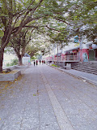
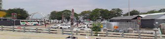
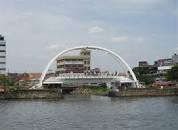
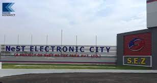

Sprawling, residential Ernakulam is known for Marine Drive, a busy waterfront promenade where boats offer backwater cruises. The Kerala Folklore and Hill Palace museums explore local heritage through art and antiquities. Shops along Broadway and on MG Road sell fabrics, crafts, and spices, while modern Lulu Mall also has a cinema and an ice rink. Simple eateries serve Keralan specialties and South Indian seafood
Marine Drive



Marine Drive, also known as APJ Abdul Kalam Marg, is a famous promenade in Kochi, India. It is built facing the backwaters, and is a popular hangout for the local populace. Despite its name, no vehicles are allowed on the walkway. Marine Drive is also an economically thriving part of the city of Kochi.
NEST

he NeST Group of Companies, with our head-quarters at Kochi (Cochin), Kerala, India, has grown from our rather humble inception in 1990 as a single manufacturing plant, to being a diversified conglomerate with a global foot-print and multi-domain expertise in the fields of Electronics Manufacturing Services (EMS), Original Design Manufacturing (ODM), System Integration (SI), Application Development & Management (ADM), IT Infrastructure design & implementation, consulting, besides operations in non-technology areas like Education & Training, Food & Beverages, commercial, industrial and residential real estate development etc.
The rapid pace of growth has been made possible due to a rare combination of entrepreneurial vision, technological competencies and managerial expertise that sets off the explosive synergy in our rich pool of employees who are drawn from all corners of the world, and yet, professes a single focus – a desire for exceeding our customer expectations.
The Group now has development centers, factories and front-end offices over 32 global locations, across the USA, Canada, Europe, Middle East, South East Asia, Japan, Australia, and India.
Hill Palace Museum
Hill Palace is an archaeological museum and palace located in the Tripunithura neighbourhood of Kochi, Kerala, India. It is the largest archeological museum in the state and was the imperial administrative office and official residence of the Cochin Maharaja.
Bolgatty Palace and Island Resort
This is the oldest palace built by the Dutch outside the Kingdom of Holland. The palace was built by a Dutch merchant in 1744. Later, it was renovated with a magnificent lawn and a number of reforms. The palace served as the official residence of Dutch Governor.